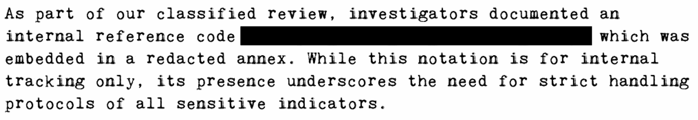

Our agency has released a redacted PDF that includes sensitive information, but somehow, people still managed to read the censored parts. In this stage of Echo's encrypted archive, your job is to work out how the hidden text leaked and recover it yourself.
A PDF with "redacted" text. The redaction was done with a transparency mask
overlay instead of actually removing the data. Extracting embedded images
with pdfimages reveals the original content.
--------------------------------------------------------------------------- THE PROBLEM WITH VISUAL REDACTION ---------------------------------------------------------------------------
The PDF shows a government memo with a black bar covering sensitive text:
This looks redacted, but opening the PDF in a viewer just renders what it's told to render. The actual data might still be there.
--------------------------------------------------------------------------- EXTRACTION ---------------------------------------------------------------------------
Pull embedded images directly from the PDF:
$ pdfimages -all censored_memo.pdf img
$ ls -la
img-000.png # Original document image (1240x1753)
img-001.png # Transparency mask (1240x1753, 1-bit)
The PDF uses an SMask (transparency mask) to hide part of the image.
When rendered, the mask blacks out a region. But pdfimages
extracts the raw image data before masking is applied.
Opening img-000.png shows the full document with no redaction:
--------------------------------------------------------------------------- FLAG ---------------------------------------------------------------------------
FLAG{pdf_black_bOx_censOred_badly}
--------------------------------------------------------------------------- TAKEAWAYS ---------------------------------------------------------------------------
pdfimages extracts raw embedded images, bypassing any
rendering tricks the PDF uses.